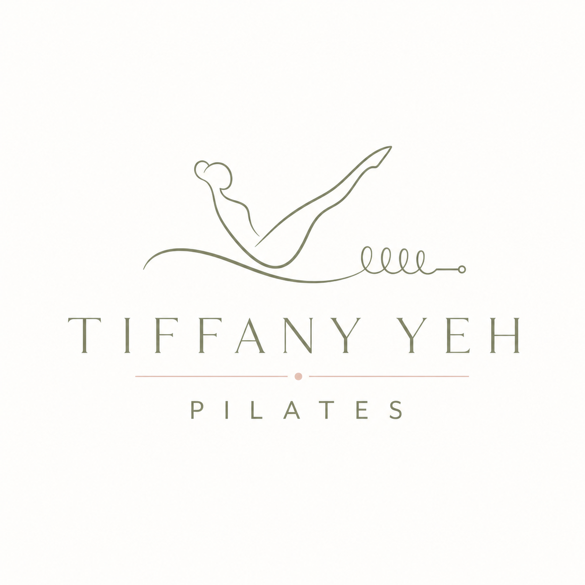
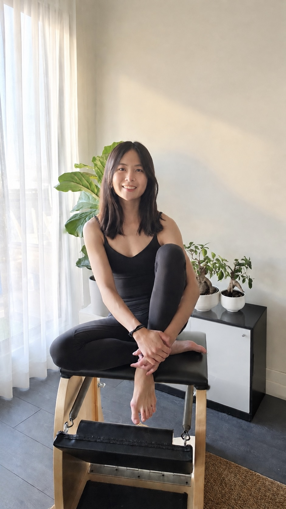

New client offer
New Client Private Pilates Session
A first private session for new clients to experience Tiffany's teaching, discuss your goals, and establish a thoughtful starting point.
3 sessions for $25555 minutes eachBook new client session
Private Classical Pilates · North York
Personalized Classical Pilates in a quiet North York (Sheppard & Leslie) home studio equiped with Gratz Pilates apparatus, shaped around your body, goals, and movement experience.
By appointment in North York · Private and semi-private sessions

About Tiffany
Tiffany came to Classical Pilates after years of pushing her body too hard and recovering from an injury from the demands of pole and aerial arts training. The practice changed how she structured training —not just physically, but in the way she moves through daily life.
Now she teaches because she wants that for everyone. She meets you where you are and help you build a practice that feels purposeful, sustainable, and connected.
Outside of her home studio, she is also a Physio Therapy Assistant at Vitalys Physio & Wellness.

Services & pricing
All sessions take place at Tiffany's North York home studio near Sheppard & Leslie. New clients begin with the introductory offer below; ongoing private and semi-private options are available after that.
New client offer
A first private session for new clients to experience Tiffany's teaching, discuss your goals, and establish a thoughtful starting point.
Ongoing one-on-one
Consistent one-on-one Classical Pilates instruction adapted to your experience, energy, movement patterns, and goals.
Practice together
Personalized instruction for two people who want to train together in the home studio setting.
Please note: clients must complete at least 3 private Pilates sessions at the studio before joining semi-private sessions.
Prices are subject to applicable taxes and are in CAD. Tiffany Yeh Pilates reserve the right to update the pricing at any time.
We ask that you please reschedule or cancel at least 24 hours before the beginning of your appointment. Any sessions cancelled or rescheduled within 24 hours will result in the session credit automatically forfeited.
Client love
Tiffany is an amazing Pilates instructor. As an advanced manual therapist, she is great and isolating muscles in the body that require more stability to help alleviate pain and discomfort. She is always a pleasure to learn from because her positive disposition makes her learning enjoyable and fun..even with many glute bridges! She is a wonderful instructor and anyone that takes her class would seriously progress and benefit from her. Thank you Tiffany!
After taking weekly group classes with Tiffany I wanted to deepen my Pilates practise with her guidance. She is always attentive to how my body is feeling and how we can push to get to the next level. When introducing my husband to Pilates we found that Tiffany's teaching style is a great match for our learning styles. You can feel her passion for teaching through the way she builds on every session, her ability to help you get to that mind-muscle connection and to hit your goals. It is a great on-going partnership. We are so happy we introduced semi-private sessions into our week. She's the best!
Tiffany is one of the most thoughtful and detail-oriented Pilates instructors I’ve ever had. She’s kind, patient, and always knows exactly how to adjust my posture and movement to help me get the most out of each exercise. Her guidance is clear, encouraging, and has helped me make so much progress over time. What I love most is every class feels personal. Even in a group setting, she takes the time to make sure everyone gets the attention and support they need. She also creates such a warm and welcoming atmosphere that every class is a joy to be in. I genuinely look forward to every session, and it’s always a pleasure learning from her.
I had the great pleasure of meeting Tiffany when she instructed an absolutely amazing class at the Pilates studio that I had recently started attending. it has been two years and Tiffany has had a great deal to do with my regaining strength and healing past injuries. She is a kind, knowledgeable, professional, who knows exactly what modifications for each and one of her students. I have recently had the pleasure of taking private Pilates sessions with Tiffany and the strength I have gained and the changes in my body have been evident from the first week. I hope to continue my journey with Tiffany as she has also become a good friend.
Tiffany is an exceptional Pilates instructor! Her calm and attentive approach puts you at ease, but what truly stands out is her incredible focus on precise muscle engagement with easy cueing. Every session leaves you feeling balanced, stronger, and deeply connected to your core. You think her sessions are easy when you are doing it but you will suffer with muscle pain next day! Thank you Tiffany.
Start your private practice
Tell me a little about your goals, experience, and preferred schedule. I’ll follow up with availability, and the best next step to start your Pilates journey.
Inquire about private PilatesBefore we begin
The studio is conveniently located in North York near Sheppard & Leslie (Bessarion TTC subway station). The exact address, parking instructions, and arrival details are shared after your appointment is confirmed.
At Tiffany Yeh Pilates, we deliver the Classical Pilates method as Joseph Pilates intended based on each client's body and movement goals. The apparatus, structure, transitions, and thoughtful repetitions in Classical Pilates lead to purposeful progressions that ultimately transforms the body.
We will discuss your goals, observe how you move, and begin with exercises that help establish a strong foundation and challenge progressively.
Please bring a water bottle, towel, and wear regular socks or grip socks. We require all jewlery to be removed and long hair to be tied up for clients' safety.
Book your first Pilates session directly via our Square booking site. If you are unsure and would like to speak with us, please book a Client Intro Call or contact us at hello@tiffanyyehpilates.ca. We will get back to you to discuss next steps within 48 hours.